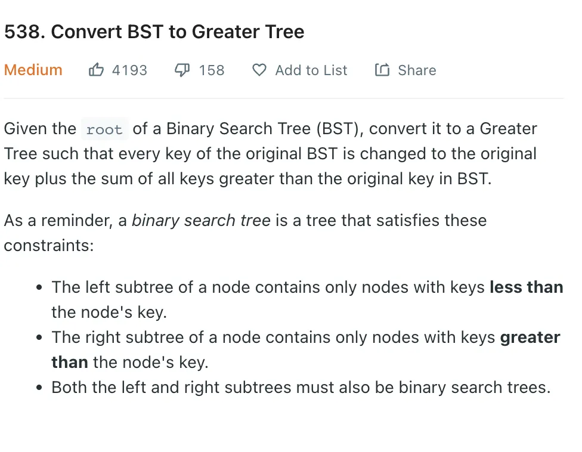
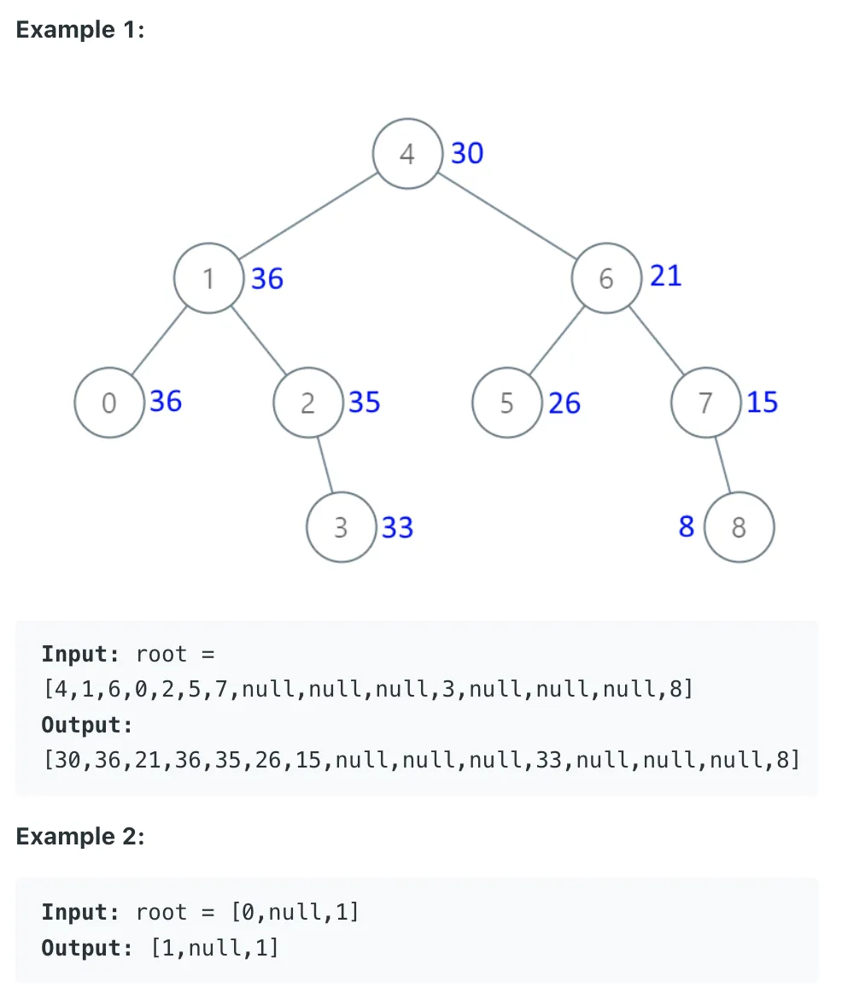
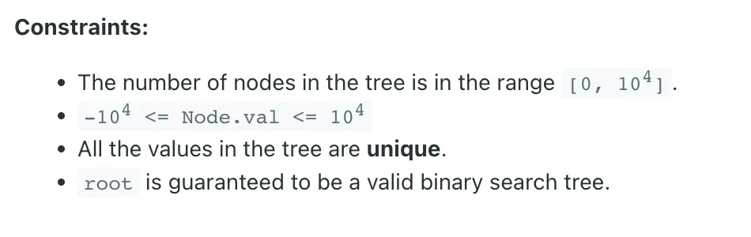

538. Convert BST to Greater Tree
Question



✍🏽 My Solution
Runtime: 1 ms, faster than 38.70% of Java online submissions for Convert BST to Greater Tree. Memory Usage: 49.2 MB, less than 19.13% of Java online submissions for Convert BST to Greater Tree.
class Solution {
private int sum = 0;
public TreeNode convertBST(TreeNode root) {
inorder(root);
return root;
}
public void inorder(TreeNode root) {
if (root == null) return;
convertBST(root.right);
sum += root.val;
root.val =sum;
convertBST(root.left);
}
}
🧠 Thought Process
- Why did I choose this particular implementation?
- 看王爭的題解寫的
- 本題目要求我們將每個節點的值修改為原來的節點值加上所有大於他的節點值之和。
- 這樣我們只需要反序中序遍歷該二叉搜索樹，紀錄過程中的節點之和，並不斷更新當前遍歷到的節點的節點值，即可得到題目要求的累加樹
- What is the time/space complexity of my solution? How do I know?
- time: O(n) 節點個樹
- space: O(n)